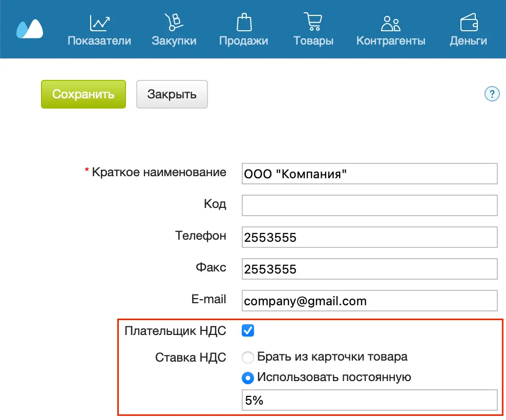
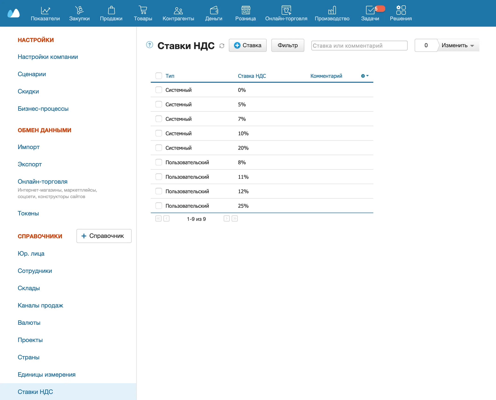
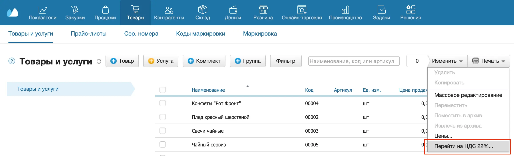
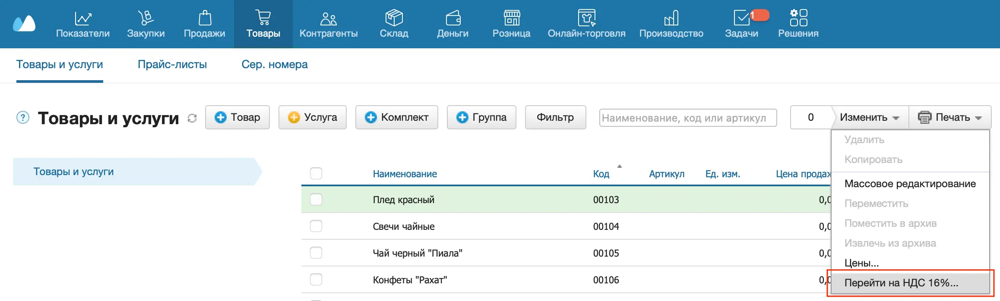

Настройка НДС
Если ваша организация является плательщиком НДС:
- Перейдите в раздел Меню пользователя → Настройки → Юрлица.
- Откройте карточку вашего юрлица и установите флажок Плательщик НДС. Выберите, какую ставку НДС использовать:
- Брать из карточки товара — применять для товаров ставки НДС, которые указаны в карточках товаров;
- Использовать постоянную — применять одну ставку НДС ко всем товарам. Укажите эту ставку НДС.
Если флажок Плательщик НДС не установлен, в документах, создаваемых от этого юрлица, НДС не рассчитывается, даже если он указан в карточке товара. В печатных формах отображается — Без НДС. Изменить в документе ставку НДС вручную тоже не получится.
- Нажмите Сохранить.

В документах для товаров и услуг будет рассчитываться соответствующий процент и сумма НДС.
Ставка НДС по умолчанию указывается в карточке товара или услуги. При необходимости в созданных документах ее можно изменить отдельно для любой позиции.
Создание дополнительных ставок НДС
Список действующих ставок отображается в разделе Меню пользователя → Настройки → Ставки НДС.

Если предустановленных ставок НДС недостаточно, можно создать дополнительную ставку.
- Перейдите в раздел Меню пользователя → Настройки.
- Слева в разделе Справочники выберите справочник Ставки НДС.
- Нажмите +Ставка — откроется новое окно.
- Укажите налоговую ставку. При необходимости добавьте комментарий.
- Нажмите на кнопку Сохранить вверху.
Дополнительную ставку также можно создать в карточке товара и в строке с товаром в Заказе покупателя.
1 января 2025 года вступают в силу поправки, внесенные Федеральным законом № 176-ФЗ. Организации и индивидуальные предприниматели, которые применяют УСН, теперь должны платить НДС в размере 5% или 7% в зависимости от суммы годового дохода. В МоемСкладе ставки 5% и 7% доступны по умолчанию. При торговле в розницу необходимо обновить ККТ.
Переход на ставку НДС 22% (Россия)
С 1 января 2026 года вступает в силу Федеральный закон от 28.11.2025 № 425-ФЗ. Организации и индивидуальные предприниматели, работающие по основной ставке НДС 20%, должны будут платить НДС в размере 22%.
Прежде чем переходить на новую ставку НДС, обновите Кассу МойСклад, драйвер и прошивку ККТ.
Чтобы изменить ставку НДС по всем товарам, услугам, группам и комплектам в МоемСкладе:
- Перейдите в раздел Товары → Товары и услуги.
- Нажмите на кнопку Изменить и выберите Перейти на НДС 22%.

- Подтвердите действие.
Ставка изменится сразу после подтверждения действия. Поэтому рекомендуем сделать изменение ставки завершающим действием в системе в этом году или первым действием в следующем.
Переход на ставку НДС 16% (Казахстан)
С 1 января 2026 года, согласно новому Налоговому кодексу РК, организации и индивидуальные предприниматели в Казахстане, работающие по основной ставке НДС 12%, должны будут платить НДС в размере 16%.
Чтобы изменить ставку НДС по всем товарам, услугам, группам и комплектам в МоемСкладе:
- Перейдите в раздел Товары → Товары и услуги.
- Нажмите на кнопку Изменить и выберите Перейти на НДС 16%.

- Подтвердите действие.
Ставка изменится сразу после подтверждения действия. Поэтому рекомендуем сделать изменение ставки завершающим действием в системе в этом году или первым действием в следующем.
Работа со ставками НДС
Созданные ставки НДС можно:
- редактировать (в том числе массово);
- архивировать;
- удалять.
Редактирование ставок доступно только при наличии соответствующих прав.